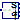

Utility classes used by translational example models
This package contains utility models and functions used by some of the example models from the translational mechanics package.
Extends from Modelica.Icons.UtilitiesPackage (Icon for utility packages).
| Name | Description |
|---|---|
| Generate Stribeck friction table for example Friction for the SupportFriction | |
|  DirectMass | Input/output block of a direct mass model |
| InverseMass | Input/output block of an inverse mass model |
| SpringDamper | Input/output block of a spring/damper model |
| Spring | Input/output block of a spring model |
| SpringDamperNoRelativeStates | Linear 1D translational spring and damper in parallel (s and v are not used as states) |
 Modelica.Mechanics.Translational.Examples.Utilities.GenerateStribeckFrictionTable
Modelica.Mechanics.Translational.Examples.Utilities.GenerateStribeckFrictionTableGenerate Stribeck friction table for example Friction for the SupportFriction
Returns a table with the friction characteristic table[nTable, 2] = [0, f1; …; v_max, fn], where the first column is the velocity v in the range 0 … v_max and the second column is the friction force according to the Stribeck curve:
f = F_Coulomb + F_prop*v + F_Stribeck*exp(-fexp*v);
Extends from Modelica.Icons.Function (Icon for functions).
| Name | Description |
|---|---|
| F_prop | Velocity dependent friction coefficient [N.s/m] |
| F_Coulomb | Constant friction: Coulomb force [N] |
| F_Stribeck | Stribeck effect [N] |
| fexp | Exponential decay [s/m] |
| v_max | Generate table from v=0 ... v_max |
| nTable | Number of table points |
| Name | Description |
|---|---|
| table[nTable, 2] | Friction table |
Input/output block of a direct mass model
A translational component with pure signal interface which can be applied for
a FMU (Functional Mock-up Unit)
exchange.
The input force fDrive is applied on one side of a sliding mass
whereby the input force f is applied
on the other side of it.
Extends from Modelica.Blocks.Icons.Block (Basic graphical layout of input/output block).
| Name | Description |
|---|---|
| m | Mass [kg] |
| Name | Description |
|---|---|
| fDrive | Accelerating force acting at flange (= -flange.f) [N] |
| s | Mass moves with position s due to force f [m] |
| v | Mass moves with speed v due to force f [m/s] |
| a | Mass moves with acceleration a due to force f [m/s2] |
| f | Force to drive the mass [N] |
Input/output block of an inverse mass model
A translational component with pure signal interface which can be applied for
a FMU (Functional Mock-up Unit)
exchange.
Based on the kinematic inputs applied on a sliding mass
the output force f is returned.
Extends from Modelica.Blocks.Icons.Block (Basic graphical layout of input/output block).
| Name | Description |
|---|---|
| m | Mass [kg] |
| Name | Description |
|---|---|
| s | Position to drive the mass [m] |
| v | Speed to drive the mass [m/s] |
| a | Acceleration to drive the mass [m/s2] |
| f | Force needed to drive the flange according to s, v, a [N] |
Input/output block of a spring/damper model
A linear 1D translational spring and damper in parallel with pure signal interface which can be applied for a FMU (Functional Mock-up Unit) exchange.
Extends from Modelica.Blocks.Icons.Block (Basic graphical layout of input/output block).
| Name | Description |
|---|---|
| c | Spring constant [N/m] |
| d | Damping constant [N.s/m] |
| s_rel0 | Unstretched spring length [m] |
| Name | Description |
|---|---|
| s1 | Position of left flange of force element [m] |
| v1 | Speed to left flange of force element [m/s] |
| f1 | Force generated by the force element [N] |
| s2 | Position of right flange of force element [m] |
| v2 | Speed to right flange of force element [m/s] |
| f2 | Force generated by the force element [N] |
Input/output block of a spring model
A linear 1D translational spring with pure signal interface which can be applied for a FMU (Functional Mock-up Unit) exchange.
Extends from Modelica.Blocks.Icons.Block (Basic graphical layout of input/output block).
| Name | Description |
|---|---|
| c | Spring constant [N/m] |
| s_rel0 | Unstretched spring length [m] |
| Name | Description |
|---|---|
| s1 | Position of left flange of force element [m] |
| f1 | Force generated by the force element [N] |
| s2 | Position of right flange of force element [m] |
| f2 | Force generated by the force element [N] |
Linear 1D translational spring and damper in parallel (s and v are not used as states)
A spring and damper element connected in parallel. The component can be connected either between two masses to describe the joint elasticity and damping, or between a mass and the housing (component Fixed), to describe a coupling of the element with the housing via a spring/damper.
This is the same element as Translational.Components.SpringDamper but with the only difference, that the relative quantities are not used as states. If the relative states are potentially used as states, "a_rel = der(v_rel)" is present, and then exporting this model as FMU requires to also have the accelerations in the flanges as inputs, which is usually not desired for a force element.
Extends from Modelica.Mechanics.Translational.Interfaces.PartialCompliant (Compliant connection of two translational 1D flanges), Modelica.Thermal.HeatTransfer.Interfaces.PartialElementaryConditionalHeatPortWithoutT (Partial model to include a conditional HeatPort in order to dissipate losses, used for textual modeling, i.e., for elementary models).
| Name | Description |
|---|---|
| c | Spring constant [N/m] |
| d | Damping constant [N.s/m] |
| s_rel0 | Unstretched spring length [m] |
| useHeatPort | = true, if heatPort is enabled |
| Initialization | |
| s_rel | Relative distance (= flange_b.s - flange_a.s) [m] |
| Name | Description |
|---|---|
| flange_a | (left) driving flange (flange axis directed into cut plane, e. g. from left to right) |
| flange_b | (right) driven flange (flange axis directed out of cut plane) |
| heatPort | Optional port to which dissipated losses are transported in form of heat |